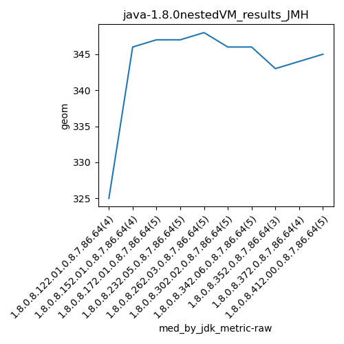

java-1.8.0 JMH
Context at bottom
/home/jvanek/git/benchmarks-in-nested-virtualisation-toolchain/final_results/nestedVM_results/nestedVM_results_RADARGUNs3
java-1.8.0
JMH
/home/jvanek/git/benchmarks-in-nested-virtualisation-toolchain/final_results/nestedVM_results/nestedVM_results_SPECJBB
java-1.8.0
JMH
/home/jvanek/git/benchmarks-in-nested-virtualisation-toolchain/final_results/nestedVM_results/nestedVM_results_RADARGUNs1
java-1.8.0
JMH
/home/jvanek/git/benchmarks-in-nested-virtualisation-toolchain/final_results/nestedVM_results/nestedVM_results_DACAPO
java-1.8.0
JMH
/home/jvanek/git/benchmarks-in-nested-virtualisation-toolchain/final_results/nestedVM_results/nestedVM_results_JMH
java-1.8.0
JMH
nestedVM_results_JMH
final score
Expected number of java-1.8.0 JDKs: 7
1st avgmed_alljdks_metric:
/home/jvanek/git/benchmarks-in-nested-virtualisation-toolchain/final_results/result_processing.py /home/jvanek/git/benchmarks-in-nested-virtualisation-toolchain/final_results/nestedVM_results/nestedVM_results_JMH geom False
values: [324, 325, 324, 326, 349, 346, 344, 346, 347, 346, 346, 347, 347, 347, 346, 347, 347, 345, 347, 348, 348, 349, 347, 346, 346, 347, 346, 348, 344, 345, 346, 346, 346]

Expected number of iterations: 5
final number of values: 33 out of 35
Pass rate: 94.3%
values: (324, 349, 343.8787878787879, 346)

** accuracy from all jdks and runs
more is better
MIN: 324
MAX: 349
AVG: 343.8787878787879
MED: 346
Relative differences 1:
MIN-MAX: 7.0 %
MIN-AVG: 6.0 %
MIN-MED: 6.0 %
MAX-MIN: -8.0 %
MAX-AVG: -1.0 %
MAX-MED: -1.0 %
AVG-MED: 1.0 %
stored to java-1.8.0.properties. sort | uniq that!
2nd avgmed_by_jdk_metric:
values: [324.75, 346.25, 346.6, 346.4, 347.8, 346.6, 345.4]

values: [325, 346, 347, 347, 348, 346, 346]

values: (324.75, 347.8, 343.40000000000003, 346.4)
values: (325, 348, 343.57142857142856, 346)

** accuracy from all jdks where runs were avged
more is better
MIN: 324.75
MAX: 347.8
AVG: 343.40000000000003
MED: 346.4
Relative differences 1:
MIN-MAX: 7.0 %
MIN-AVG: 5.0 %
MIN-MED: 6.0 %
MAX-MIN: -7.0 %
MAX-AVG: -1.0 %
MAX-MED: -0.0 %
AVG-MED: 1.0 %
stored to java-1.8.0.properties. sort | uniq that!
** accuracy from all jdks where runs were medianed
more is better
MIN: 325
MAX: 348
AVG: 343.57142857142856
MED: 346
Relative differences 1:
MIN-MAX: 7.0 %
MIN-AVG: 5.0 %
MIN-MED: 6.0 %
MAX-MIN: -7.0 %
MAX-AVG: -1.0 %
MAX-MED: -1.0 %
AVG-MED: 1.0 %
stored to java-1.8.0.properties. sort | uniq that!
pass rates:
nestedVM_results_JMH=94.3%
Context:
- nestedVM_results
- JMH